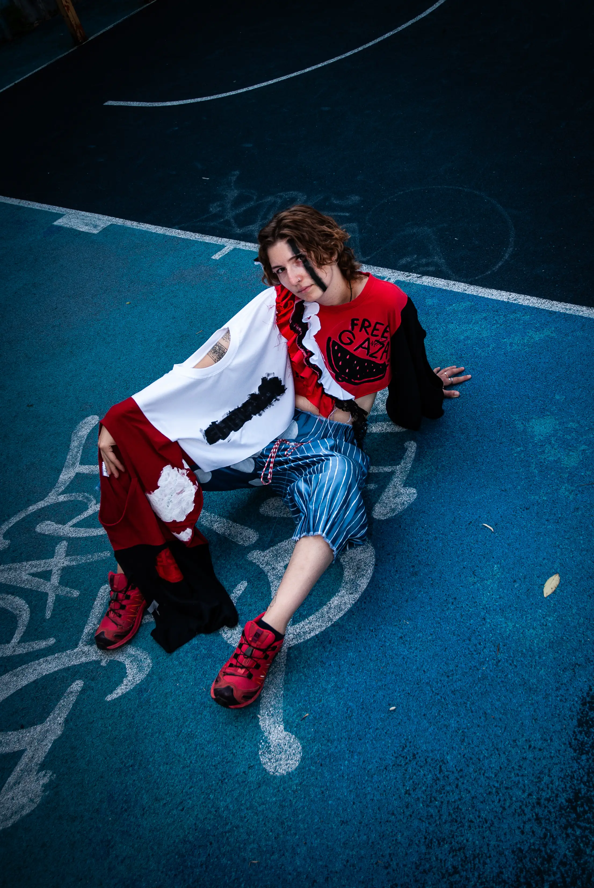
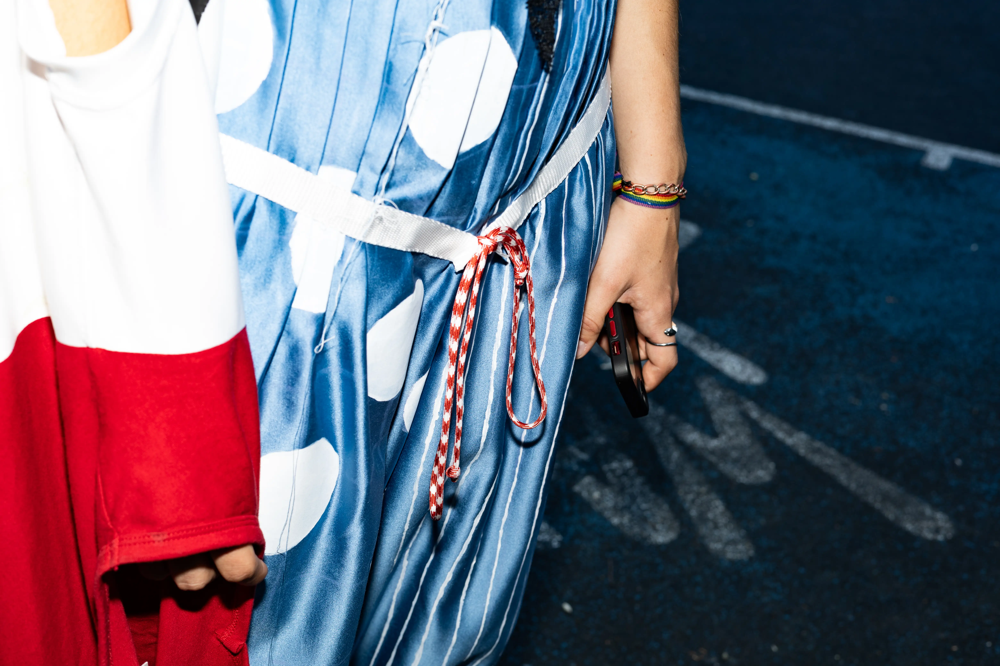
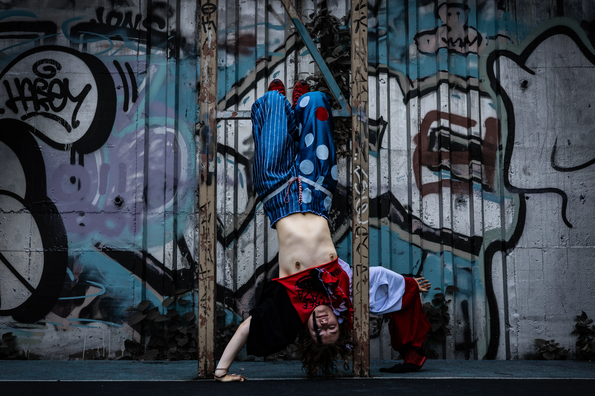
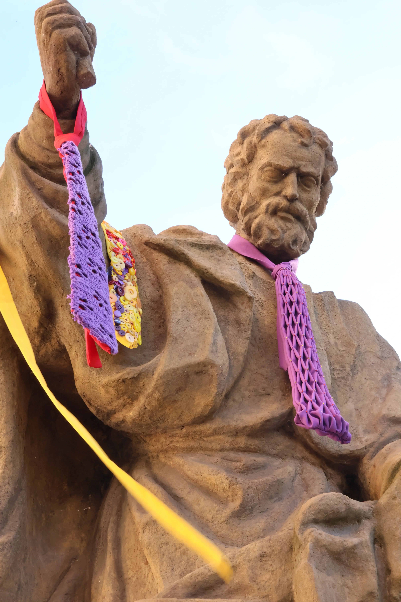
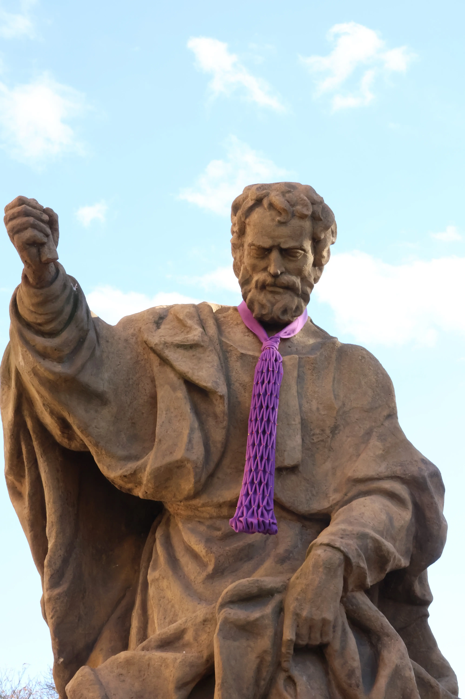
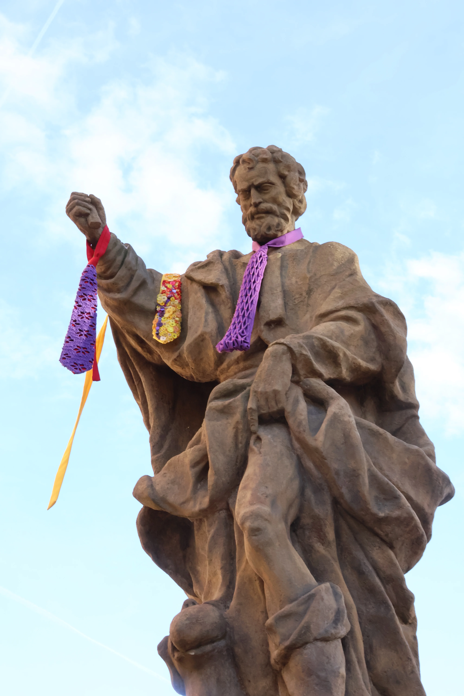

Vodnář - jeho znakem je džbán s vodou. Základ tvoří satén, na němž
vytváří iluzi klidného toku kousky organzy a tylu. Doplněno
lesklými kapkami korálků a slzami 3D tisku. Vodní víla co dala
život nám všem.
Kolekce je inspirována prostředím protestu. Nejen spojující
kritikou systému ale hlavně pocitem komunity, přítomností lásky a
solidarity. Chceme pamatovat na ty co přišli před námi, například
zde sametem reprezentována sametová revoluce, bojujeme za změny
nynějších norem, zde maskulinní modelstvo nosí sukně a krajky a
chceme vám zanechat naději na lepší zítřek. Stále je za co
bojovat. Naděje umírá poslední.
Oděv a textil Liberec 2026 - 4. místo / Vystaveno v rámci akce
Altprajd 2026
Pracanti
Design, Šití: Bex Macura
Makeup: May Jurásků, Mars Sneider
Fotografstvo: Morga Proktej, František Macura, Jakub Volný
Modelstvo: Ethi Riegl, Nataša Krásnohorská, Mars Sneider, Werdy
Kodat, Tommy Paul
ob. jaro/léto 2026

Naděje No.6


02.1 / Kolekce
No.6.
Láska a solidarita
Trička z druhé ruky byly zbaveny jejich log. Na díly kalhot ručně
namalovány puntíky a proužky. Poté vytvořeny protizáhyby, přišity
do skryté gumy. Celek doplňuje kolekci Naděje, avšak byl vytvořen
až po přehlídce v Liberci.
V budoucnu už nebude koho oddávat kromě plastových trosek našich
technologií a přírody. Květiny zarostou všechno co jsme nazývali
skvělým a inovativním, to samé čím se ničíme. Byly použity
techniky háčkování, korálkování a weatheringu, pro podsvícení šatů
jsme spolupracovali s oborem elektrikář. Každý detail byl ručně
přišit.
Oděv a textil Liberec 2025 / MMT 2025
pracanti
Design, Sewing: Bex Macura Makeup: Sofie Gottfriedová
Photography: Veronika Zlámalová, Filip Stokr, Jakub Volný
Model: Míša Trnová, Martina Mašková
ob. léto/podzim 2025

Rozkvět


04 / Kolekce
Rozkvět.
Kvetou, ale tyhle kytičky moc nevoní.
Kolekce tří kravat, využité techniky jsou háčkovaná krajka,
žabičkování, korálkování a ozdobné přišívání knoflíků.
MMT 2025
pracanti
Design, Šití: Bex Macura
Fotografstvo: František Macura, Veronika Zlámalová
Model: sv. Roh, Jana Jelínková